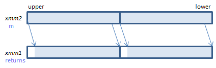
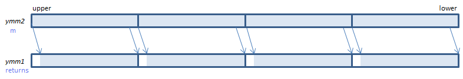
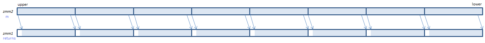

VPSRAQ - Packed Shift Right Arithmetic Qword
VPSRAQ xmm1{k1}{z}, xmm2/m128/m64bcst, imm8 (V5+VL the number of bits is specified by imm8.
__m128i _mm_srai_epi64(__m128i m, int count) the number of bits is specified by count.
__m128i _mm_mask_srai_epi64(__m128i s, __mmask8 k, __m128i m, unsigned int count) the number of bits is specified by count.
__m128i _mm_maskz_srai_epi64(__mmask8 k, __m128i m, unsigned int count) the number of bits is specified by count.
VPSRAQ xmm1{k1}{z}, xmm2, xmm3/m128 (V5+VL the number of bits is specified by the lower QWORD of xmm3/m128.
__m128i _mm_sra_epi64(__m128i m, __m128i count) the number of bits is specified by the lower QWORD of count.
__m128i _mm_mask_sra_epi64(__m128i s, __mmask8 k, __m128i m, __m128i count) the number of bits is specified by the lower QWORD of count.
__m128i _mm_maskz_sra_epi64(__mmask8 k, __m128i m, __m128i count) the number of bits is specified by the lower QWORD of count.

For each QWORD, shift the bits to the right by the specified number of bits. Emptied upper bits are filled with the initial sign bit.
VPSRAQ ymm1{k1}{z}, ymm2/m256/m64bcst, imm8 (V5+VL the number of bits is specified by imm8.
__m256i _mm256_srai_epi64(__m256i m, int count) the number of bits is specified by count.
__m256i _mm256_mask_srai_epi64(__m256i s, __mmask8 k, __m256i m, unsigned int count) the number of bits is specified by count.
__m256i _mm256_maskz_srai_epi64(__mmask8 k, __m256i m, unsigned int count) the number of bits is specified by count.
VPSRAQ ymm1{k1}{z}, ymm2, xmm3/m128 (V5+VL the number of bits is specified by the lower QWORD of xmm3/m128.
__m256i _mm256_sra_epi64(__m256i m, __m128i count) the number of bits is specified by the lower QWORD of count.
__m256i _mm256_mask_sra_epi64(__m256i s, __mmask8 k, __m256i m, __m128i count) the number of bits is specified by the lower QWORD of count.
__m256i _mm256_maskz_sra_epi64(__mmask8 k, __m256i m, __m128i count) the number of bits is specified by the lower QWORD of count.

For each QWORD, shift the bits to the right by the specified number of bits. Emptied upper bits are filled with the initial sign bit.
VPSRAQ zmm1{k1}{z}, zmm2/m512/m64bcst, imm8 (V5 the number of bits is specified by imm8.
__m512i _mm512_srai_epi64(__m512i m, unsigned int count) the number of bits is specified by count.
__m512i _mm512_mask_srai_epi64(__m512i s, __mmask8 k, __m512i m, unsigned int count) the number of bits is specified by count.
__m512i _mm512_maskz_srai_epi64(__mmask8 k, __m512i m, unsigned int count) the number of bits is specified by count.
VPSRAQ zmm1{k1}{z}, zmm2, xmm3/m128 (V5 the number of bits is specified by the lower QWORD of xmm3/m128.
__m512i _mm512_sra_epi64(__m512i m, __m128i count) the number of bits is specified by the lower QWORD of count.
__m512i _mm512_mask_sra_epi64(__m512i s, __mmask8 k, __m512i m, __m128i count) the number of bits is specified by the lower QWORD of count.
__m512i _mm512_maskz_sra_epi64(__mmask8 k, __m512i m, __m128i count) the number of bits is specified by the lower QWORD of count.

For each QWORD, shift the bits to the right by the specified number of bits. Emptied upper bits are filled with the initial sign bit.
x86/x64 SIMD Instruction List
Feedback